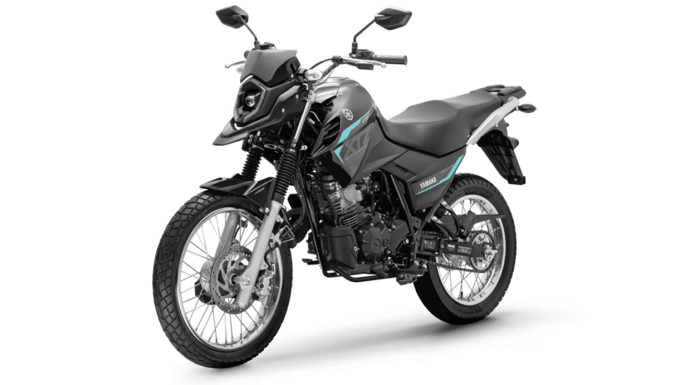

Consumo da Yamaha Crosser 150 no dia a dia

Conheça a Yamaha Crosser 150
A Yamaha Crosser 150 é uma das motos trail mais populares do Brasil. Ela foi projetada para oferecer versatilidade, permitindo rodar tanto no asfalto quanto em estradas de terra com conforto e segurança.
Uma das dúvidas mais comuns entre quem pensa em comprar esse modelo é sobre o consumo da Yamaha Crosser 150. Afinal, o gasto com combustível é um dos fatores mais importantes no custo de uso de uma motocicleta.
De modo geral, a Crosser 150 é conhecida por ser relativamente econômica, especialmente quando comparada com motos de maior cilindrada.
Quantos km por litro faz a Crosser 150?
O consumo da Crosser 150 pode variar dependendo do tipo de uso, da forma de pilotagem e das condições da estrada. Em média, muitos motociclistas relatam um consumo entre 35 km/l e 40 km/l.
Em trajetos urbanos, com trânsito intenso e muitas paradas, o consumo costuma ficar um pouco mais baixo. Já em viagens em estrada, mantendo velocidade constante, é possível alcançar números melhores.
Esse nível de consumo é considerado bastante positivo para uma moto da categoria trail, principalmente porque esse tipo de moto costuma ser um pouco mais pesado que modelos urbanos.
Fatores que influenciam o consumo
Alguns fatores podem influenciar diretamente o consumo da Crosser 150 no dia a dia. Entre os principais estão:
- Estilo de pilotagem: acelerar de forma agressiva aumenta o consumo.
- Peso transportado: levar garupa ou bagagem pode aumentar o gasto de combustível.
- Condições da estrada: subidas e terrenos irregulares exigem mais do motor.
- Manutenção da moto: filtro de ar sujo ou pneus descalibrados podem aumentar o consumo.
Manter a moto revisada e pilotar de forma mais suave ajuda a melhorar a eficiência de combustível.
Vale a pena pela economia?
Considerando o conjunto geral, o consumo da Yamaha Crosser 150 é bastante equilibrado. Ela não é a moto mais econômica do mercado, mas oferece um bom equilíbrio entre desempenho, conforto e versatilidade.
Para quem precisa de uma moto que enfrente tanto ruas asfaltadas quanto estradas de terra, a Crosser 150 pode ser uma escolha muito interessante. O consumo relativamente baixo também ajuda a reduzir o custo mensal de uso.
Além disso, a confiabilidade da Yamaha e o bom valor de revenda tornam o modelo ainda mais atrativo para muitos motociclistas.
Outras notícias
Bajaj Dominar 400 vale a pena?
Qual moto escolher: Yamaha Fazer 250 ou Honda CB 300F Twister?